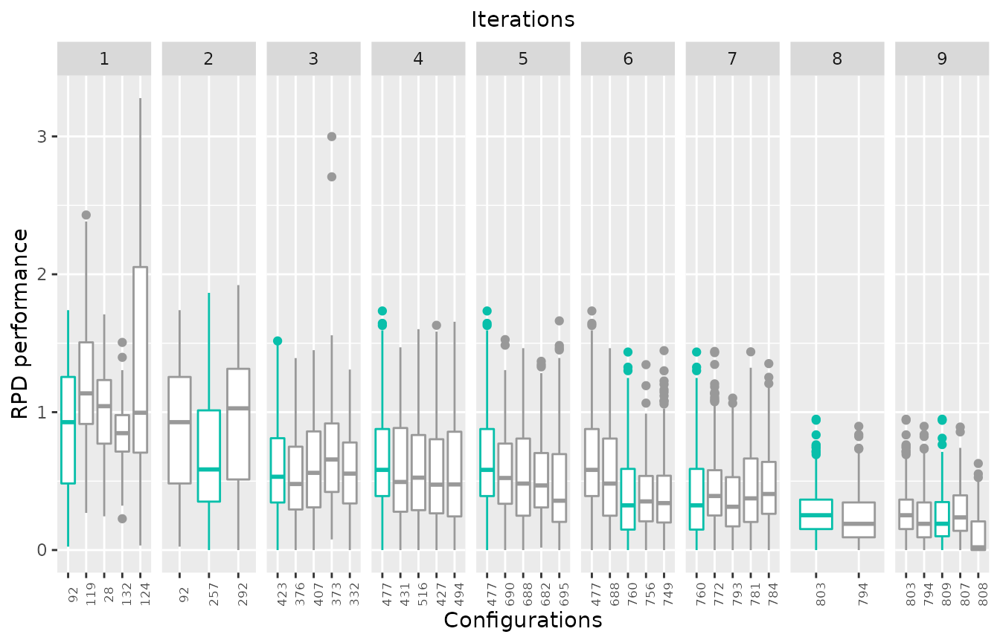

Introduction
The iraceplot package provides a set of functions to create plots to visualize the configuration data generated by the irace package.
Functions
get_parameters_names
boxplot_test
scatter_test
parallel_coord
parallel_cat
sampling_frequency
sampling_frequency_iteration
sampling_density
sampling_model_compare
sampling_pie
plot_experiments_matrix
sampling_distance
boxplot_training
scatter_training
configurations_displayInstallation
Install iraceplot
For installing iraceplot you need to install the devtools package:
install.packages("devtools")Currently, the iraceplot package can be installed from Gtihub:
devtools::install_github("pabloOnate/iraceplot")How to use
This is a basic example that shows how to use iraceplot:
To use the functions its required to have the log file generated by irace (logFile option in the irace package). To load the irace log data, replace the path of the file with yours:
load("~/path_to/irace.Rdta")This file contains the irace_results variable which contains the irace log. For more details about this variable, please go to the documentation of the irace package.
Testing data plots
The following functions create plots of the testing data in the irace log (irace_results$testing). This data is created only when the testing options of irace where set when executing irace. See the irace package documentation for details.
Testing performance box plot
The boxplot_test function creates a box plot using the performance of the configurations tested. Note that the performance that can be displayed is restricted to the testing performed by irace.
boxplot_test(irace_results,
type = "all",
rpd = TRUE,
file_name = NULL)Arguments
irace_results: irace log, loaded from the irace log Rdata file
type: String, either "all", "ibest" or "best" (default: "all"). The value "all" shows all the configurations for which testing was performed, "ibest" shows the elite configurations of each iteration and "best" shows the elite configurations of the last iteration
rpd: Logical (default TRUE) displays performance as the relative percentage deviation from the best quality found by instance. FALSE displays raw performance.
file_name: String, file name indicating where to save a pdf file with the plot. A .pdf extension will be added to the file name provided (example: "~/path-to/file_name")For example, to visualize the performance of the final elite configuration(s), use the following line:
boxplot_test(irace_results = iraceResults, type = "best")
To visualize the performance of the best elite configuration(s) of each iteration, use the following code:
boxplot_test(irace_results = iraceResults, type = "ibest")## Warning: irace data does not contain iteration elites testing, changing plot type to "best"
Testing performance scatter plot
The scatter_test function creates a scatter plot comparing the testing performance of two configurations
scatter_test(irace_results,
id_configurations,
rpd = TRUE,
file_name = TRUE
interactive = interactive() )Arguments
irace_results: irace log, loaded from the irace log Rdata file
id_configurations: Numeric vector??, a pair of configuration ids to be compared (example: idVector = c("92","119"))
rpd: Logical (default TRUE) displays performance as the relative percentage deviation from the best quality found by instance. FALSE displays raw performance.
file_name: String, file name indicating where to save a pdf file with the plot. A .pdf extension will be added to the file name provided (example: "~/path-to/file_name")
interactive: Logical (Default interactive() ), Allows you to decide when generating the graph, it is generated interactively (It is created with the plotly package) which is the default option or it is generated statically (It is created with the ggplot2 package). You must set interactive = FALSE.For example, to compare the performance of two configurations executed in the testing, use the following code:
scatter_test(irace_results = iraceResults, id_configurations = c("92","119"), interactive = interactive())
Training performance
The following functions create plots of the training data in the irace log. This data is created when executing irace. See the irace package documentation for details.
Training performance box plot
The boxplot_training function creates a box plot using the performance of the configurations obtained in the configuration process. Note that this function can only plot the performance of elite configurations.
boxplot_training(irace_results,
number_iteration = NULL,
id_configurations = NULL,
rpd = TRUE ,
file_name = NULL)Arguments
irace_results: irace log, loaded from the irace log Rdata file
number_iteration: Numeric, iteration number from which elite configuration should be selected (example: number_iteration = 5)
id_configurations: Numeric vector, configurations ids selected to be included in the plot (example: id_configurations = c(20,50,100,300,500,600,700))
rpd: Logical (default TRUE) displays performance as the relative percentage deviation from the best quality found by instance. FALSE displays raw performance.
file_name: String, file name indicating where to save a pdf file with the plot. A .pdf extension will be added to the file name provided (example: "~/path-to/file_name")For example, to visualize the performance of the final elite configuration(s), use the following line:
boxplot_training(irace_results = iraceResults)
To visualize the performance of the elite configuration(s) from a selected iteration, use the following line:
boxplot_training(irace_results = iraceResults,number_iteration = 5)
To visualize the performance of a set of selected configuration(s), use the following line:
boxplot_training(irace_results = iraceResults,id_configurations = c(20,50,100,300,500,600,700))
Function scatter_training
The scatter_training function creates a scatter plot comparing the training performance of two configurations
scatter_training(irace_results,
id_configurations,
rpd = TRUE,
file_name = NULL)Arguments
irace_results: irace log, loaded from the irace log Rdata file
id_configurations: Numeric vector??, a pair of configuration ids to be compared (example: idVector = c("92","119"))
rpd: Logical (default TRUE) displays performance as the relative percentage deviation from the best quality found by instance. FALSE displays raw performance.
file_name: String, file name indicating where to save a pdf file with the plot. A .pdf extension will be added to the file name provided (example: "~/path-to/file_name")For example, to compare the performance of two configurations evaluated in the configuration process, use the following code:
scatter_training(irace_results = iraceResults, id_configurations = c(806,809))
Configuration process plot_experiments_matrix
The plot_experiments_matrix function will return a heat map plot of all experimental data configurations
plot_experiments_matrix(irace_results,
file_name = NULL,
interactive = interactive() )Arguments
irace_results: irace log, loaded from the irace log Rdata file
file_name: String, file name indicating where to save a pdf file with the plot. A .pdf extension will be added to the file name provided (example: "~/path-to/file_name")
interactive: Logical (Default interactive() ), Allows you to decide when generating the graph, it is generated interactively (It is created with the plotly package) which is the default option or it is generated statically (It is created with the ggplot2 package). You must set interactive = FALSE.To visualize the experiments matrix, use the following code:
plot_experiments_matrix(irace_results = iraceResults, interactive = interactive())
Configuration process progression
A graph is created with all the settings and instance of the training data
configurations_display(irace_results,
rpd = TRUE,
file_name = NULL,
interactive = interactive() )Arguments
irace_results: irace log, loaded from the irace log Rdata file
rpd: Logical (default TRUE) displays performance as the relative percentage deviation from the best quality found by instance. FALSE displays raw performance.
file_name: String, file name indicating where to save a pdf file with the plot. A .pdf extension will be added to the file name provided (example: "~/path-to/file_name")
interactive: Logical (Default interactive() ), Allows you to decide when generating the graph, it is generated interactively (It is created with the plotly package) which is the default option or it is generated statically (It is created with the ggplot2 package). You must set interactive = FALSE.To visualize the configuration process detail
Configuration visualization
The following functions allow to visualize the parameter values evaluated by irace during the configuration process.
Parallel coordinates
The parallel_coord function creates a parallel coordinate plot of a set of selected configurations.
If the id_configuration argument is not provided this function displays parameter values of elite configurations. When a set of ids is provided, these selected configurations are displayed.
The iterations options allows to selecte the elite configurations displayed by iteration. If id_configuration is provided, this argument is ignored.
When there are more than 15 parameters in the scenario, only the first 15 parameter are displayed. Parameters to display can be selected with the param_names argument. When saving the plot to pdf, all parameters can be included but parameters are displayed in groups of 15.
parallel_coord(irace_results,
id_configuration = NULL,
param_names = NULL,
iterations = NULL,
pdf_all_parameters = FALSE,
file_name = NULL)Arguments
irace_results: irace log, loaded from the irace log Rdata file
id_configuration: (optional) Numeric vector, a list of configuration ids to be included in the plot (example: id_configuration = c(20,50,100,300,500,600,700)). By default final elite configurations are selected.
param_names: (optional) String vector, you need to put the parameters you want to analyze (example: param_names = c("algorithm","alpha","rho","q0","rasrank")). By default all parameters are seletected.
iterations: (optional) Numeric vector, iterations to select elite configurations to include in the plot (example: iterations = c(1,4,5))
pdf_all_parameters: Logical (default FALSE), If TRUE, several plots with groups of 15 parameters are created, otherwise it will be created with the first 15 parameters.
file_name: String, file name indicating where to save a pdf file with the plot. A .pdf extension will be added to the file name provided (example: "~/patch/example/file_name")For example, to visualize all parameters values of the final elite configurations, use the following code:
parallel_coord(irace_results = iraceResults)To visualize all parameters values of a set of selected configurations, use the following code:
parallel_coord(irace_results = iraceResults, id_configuration = c(20,50,100,300,500,600,700))To visualize a set of selected parameters values of the final elite configurations, use the following code:
parallel_coord(irace_results = iraceResults, param_names = c("algorithm","alpha","rho","q0","rasrank"))To visualize all parameters values of the elite configurations of selected iterations, use the following code:
parallel_coord(irace_results = iraceResults, iterations = c(1,4,6))Parallel categories
The parallel_cat function creates a parallel categories plot a set of the parameter values of a set of configurations.
If the id_configuration argument is not provided this function displays parameter values all sampled configurations. When a set of ids is provided, these selected configurations are displayed.
The iterations options allows to selecte the configurations displayed by iteration. If id_configuration is provided, this argument is ignored.
When there are more than 15 parameters in the scenario, only the first 15 parameter are displayed. Parameters to display can be selected with the param_names argument. When saving the plot to pdf, all parameters can be included but parameters are displayed in groups of 15.
parallel_cat(irace_results,
id_configuration = NULL,
param_names = NULL,
iterations = NULL,
pdf_all_parameters = FALSE,
file_name = NULL)Arguments
irace_results: irace log, loaded from the irace log Rdata file
id_configuration: (optional) Numeric vector, a list of configuration ids to be included in the plot (example: id_configuration = c(20,50,100,300,500,600,700)). By default final elite configurations are selected.
param_names: (optional) String vector, you need to put the parameters you want to analyze (example: param_names = c("algorithm","alpha","rho","q0","rasrank")). By default all parameters are seletected.
iterations: (optional) Numeric vector, iterations to select elite configurations to include in the plot (example: iterations = c(1,4,5))
pdf_all_parameters: Logical (default FALSE), If TRUE, several plots with groups of 15 parameters are created, otherwise it will be created with the first 15 parameters.
file_name: String, file name indicating where to save a pdf file with the plot. A .pdf extension will be added to the file name provided (example: "~/path-to/file_name")To visualize all parameters values of all configurations, use the following code:
parallel_cat(irace_results = iraceResults)To visualize all parameters values of a set of selected configurations, use the following code:
parallel_cat(irace_results = iraceResults,id_configuration = c(20,50,100,300,500,600,700))
To visualize a set of selected parameters values of the final elite configurations, use the following code:
parallel_cat(irace_results = iraceResults, param_names = c("algorithm","alpha","rho","q0","rasrank"))
To visualize all parameters values of the elite configurations of selected iterations, use the following code:
parallel_cat(irace_results = iraceResults, iterations = c(1,4,6))
Sampling frequency
The sampling_frequency function plots the sampling frequency plots of the parameter values sampled during the configuration process.
For categorical parameters frequency bar plot is displayed, while for of numerical parameters (integer and real) an histogram and density plot are shown.
Plots are displayed by default in sets of 9 parameters. If the scenario has more parameters, the first 9 parameters are displayed. The set of parameters to be displayed can be selected using the param_names argument. When creating the pdf a set of different plots is created when the number of selected parameters is more than 9.
sampling_frequency(irace_results,
param_names = NULL,
n = NULL,
file_name = NULL)Arguments
irace_results: irace log, loaded from the irace log Rdata file
param_names: (optional) String vector, you need to put the parameters you want to analyze (example: param_names = c("algorithm","alpha","rho","q0","rasrank")). By default all parameters are seletected.
n: Numeric, set of 9 parameters to be displayed (example: if n = 1, parameters from 1 to 9 are displayed, n = 2 parameters from 10 to 18 are displayed)
file_name: String, file name indicating where to save a pdf file with the plot. A .pdf extension will be added to the file name provided (example: "~/path-to/file_name")To visualize the first 9 parameter sampling frequencies, use the following code:
sampling_frequency(irace_results = iraceResults)## [1] "There are too many parameters to display. It will select relevant parameters"
## [1] "The first 9 parameters will be displayed"
## [[1]]
##
## [[2]]
##
## [[3]]
##
## [[4]]
##
## [[5]]
##
## [[6]]
##
## [[7]]
##
## [[8]]
##
## [[9]]
To visualize the second set of 9 parameter sampling frequencies (from 10 to 18), use n = 2
sampling_frequency(irace_results = iraceResults, n = 2)
## [[1]]
##
## [[2]]
To visualize the sampling frequencies of a set of selected parameters, use the following code:
sampling_frequency(irace_results = iraceResults,param_names = c("algorithm","alpha","rho","q0","rasrank"))
## [[1]]
##
## [[2]]
##
## [[3]]
##
## [[4]]
##
## [[5]]
Sampling frequency by iteration
The sampling_frequency_iteration function plots the iteration sampling frequency of a selected parameter.
For categorical parameters frequency bar plot is displayed, while for of numerical parameters (integer and real) an histogram and density plot are shown.
sampling_frequency_iteration(irace_results,
parameter,
file_name = NULL)Arguments
irace_results: irace log, loaded from the irace log Rdata file
parameter: String, parameter name whose sampling frequency should be displayed (example: parameter = "alpha")
file_name: String, file name indicating where to save a pdf file with the plot. A .pdf extension will be added to the file name provided (example: "~/path-to/file_name")To visualize the sampling frequency of a parameter, use the following code:
sampling_frequency_iteration(irace_results = iraceResults,parameter = "alpha")
Sampling density
The sampling_density function creates sampling density plot of a selected parameter.
sampling_density(irace_results,
parameter,
file_name = NULL)Arguments
irace_results: irace log, loaded from the irace log Rdata file
parameter: String, parameter name whose sampling frequency should be displayed (example: parameter = "alpha")
file_name: String, file name indicating where to save a pdf file with the plot. A .pdf extension will be added to the file name provided (example: "~/path-to/file_name")To visualize the sampling density of a parameter, use the following code:
sampling_density(irace_results = iraceResults,parameter = "alpha")## Picking joint bandwidth of 0.262
Sampling proportions
The sampling_pie function creates a pie chart to visualize the proportion of the sampling values for categorical parameters in the configuration process.
sampling_pie(irace_results,
dependency = FALSE,
parameters = NULL,
file_name = NULL)Arguments
irace_results: irace log, loaded from the irace log Rdata file
dependency: Logical (default FALSE) that allows to verify if the parameters are dependent on others, modifying the visualization of the plot
parameters: String vector, a set of categorical parameters to be included in the plot (example: parameters = c("algorithm","dlb"))
file_name: String, file name indicating where to save a pdf file with the plot. A .pdf extension will be added to the file name provided (example: "~/path-to/file_name")To visualize the sampling proportion of all categorical parameters, use the following code:
sampling_pie(irace_results = iraceResults)To visualize the sampling proportion of a selected categorical parameter, use the following code:
sampling_pie(irace_results = iraceResults, parameters = c("algorithm","dlb"))Sampling diversity
The sampling_distance function creates a plot showing the mean distance between the sampled configurations. Distance of categorical parameters is calculated as the hamming distance. Numerical parameters are compared using a threshold, defining an equality interval per parameter. Distance is shown by box plots and a line plot.
sampling_distance(irace_results,
type = "both",
t = 0.05,
file_name = NULL)Arguments
irace_results: irace log, loaded from the irace log Rdata file
type: String, either "line","boxplot" or "both" (default type="both"). When set to "both" display both the boxplot and line plot, "line" display the line plot, "boxplot" display a box plot
t: Numeric [0,1], percentage that will determine the range to determine if two values are different (example: t = 0.05 is equivalent to 5%)
file_name: String, file name indicating where to save a pdf file with the plot. A pdf extension will be added to the file name provided (example: "~/path-to/file_name")To visualize the distance between sampled configurations, use the following code:
Various functions
Function get_parameters_names
The function get_parameters_names returns a vector with the names of the parameters in the irace log
get_parameters_names(irace_results)Arguments
irace_results: irace log variable obtained from the Rdata file generate by irace
get_parameters_names(irace_results = iraceResults)## [1] "algorithm" "localsearch" "alpha" "beta" "rho"
## [6] "ants" "nnls" "q0" "dlb" "rasrank"
## [11] "elitistants"